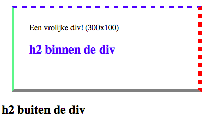
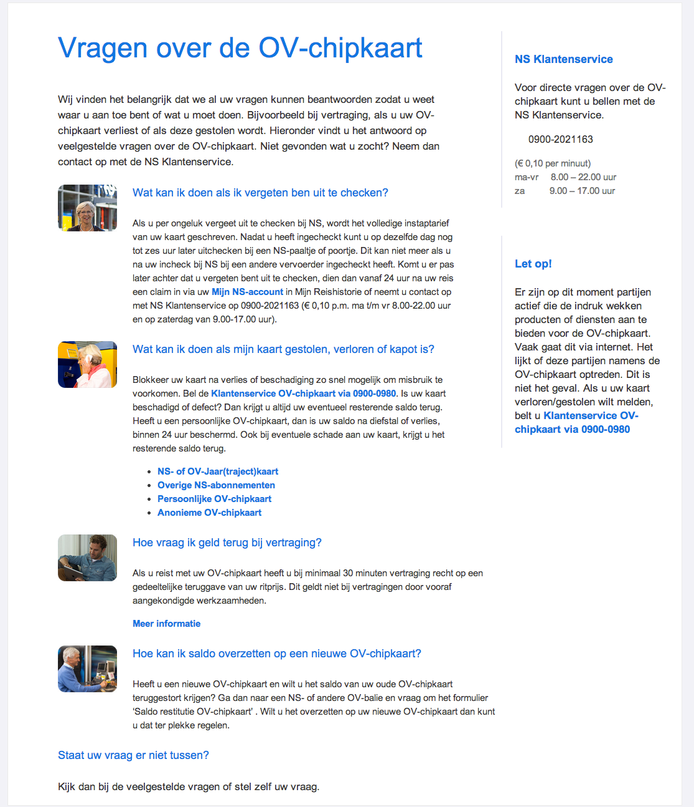
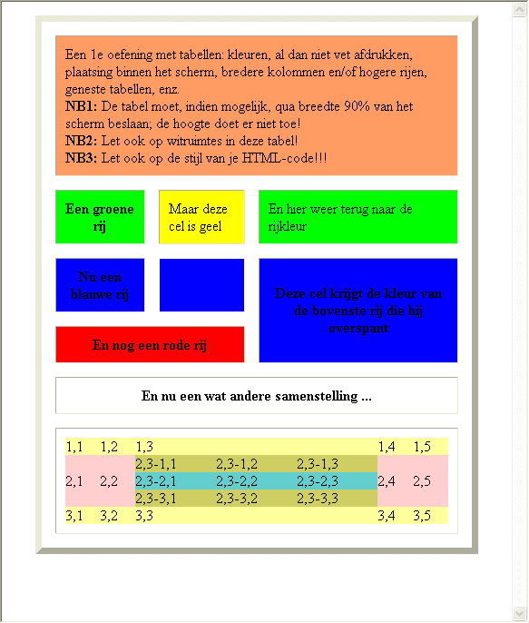

Deze week gaan we oefenen met strikte HTML en XHTML.
Gebruik steeds de validator van w3.org om je HTML en XHTML te controleren. Gebruik de css-validator voor al je stylesheets. Valideer al je werk met via de optie "file upload". Met "direct input" kun je niet alle problemen oplossen. Blijf valideren tot je geen enkele error of warning meer hebt.
Maak onderstaande webpagina. Probeer zo veel mogelijk CSS te gebruiken! Lukt het je ook om de h2 binnen de div met alleen selectors blauw te maken? (zonder een class of een id er aan te geven)
De NS heeft je een mockup gegeven van het design dat ze willen hebben voor hun nieuwe website. De HTML hebben ze al voor je gemaakt, je hoeft alleen het bijbehorende css bestand er bij te maken!
Download hier de HTMLDe opgave is te maken zonder de HTML aan te passen, maak je uitwerking dus alleen in het bestand 'ns.css'.
Het lettertype is 'Arial'. Kleuren en lettergroottes hoeven niet exact gelijk te zijn. Probeer er wel zo dicht mogelijk bij te zitten. Als je op internet zoekt naar 'color picker' vind je een heleboel websites die je helpen met kleurcodes kiezen.
Probeer eerst de kleuren, font-groottes, margins, paddings en width gelijk te krijgen. Voor de mensen die al eerder met HTML hebben gewerkt mogen ook proberen de plaatjes en de klantenservice info naast de tekst te zetten.

In opdracht 3.2 hoef je nog geen kleuren te gebruiken.
Schrijf je oplossing in HTML 4.01 Strict.
Maak de volgende tabel na. Gebruik alleen CSS voor de opmaak.
Maak van de html-documenten die je in de opdrachten 2.4, 2.5 en 3.3 hebt gemaakt elk twee versies: één in HTML 4.01 Strict en één in XHTML 1.1 Strict. Van 2.4 hoef je alleen product_b.html te gebruiken.
Je maakt dus 6 bestanden. Zet ze in een nieuwe map voor deze opdracht en noem ze als volgt:Valideer alle bestanden en zorg dat ze foutloos zijn. Succes...
SPIJ20120917